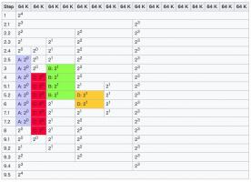

Also on BrieflyX Base
Pwntools 高级应用
在Python中实现守护进程
Asis CTF 2015 - Car Market Writeup
0CTF 2016 - Zerostorage Writeup
Tokyo Western CTF 2017 - Parrot
Tokyo Western，因为他们参加了WCTF，于是就有了这个题……

Linux Kernel Heap 101 —— Buddy & …
随着大家对glibc内存管理机制研究的深入，越来越多的heap …
SOCAT 简介
Defcon CTF 29 流水账
2021 年的 Defcon 终于落下了帷幕，想到 2021 年到现在都还没有更新 …